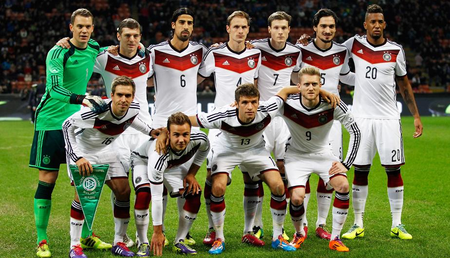
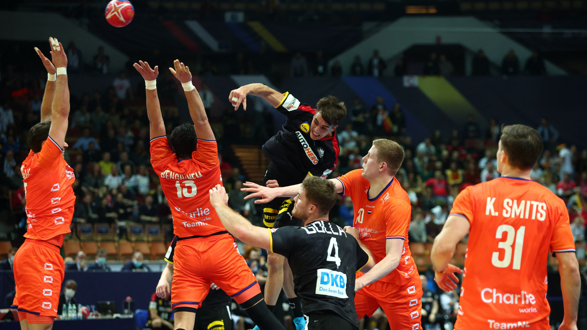
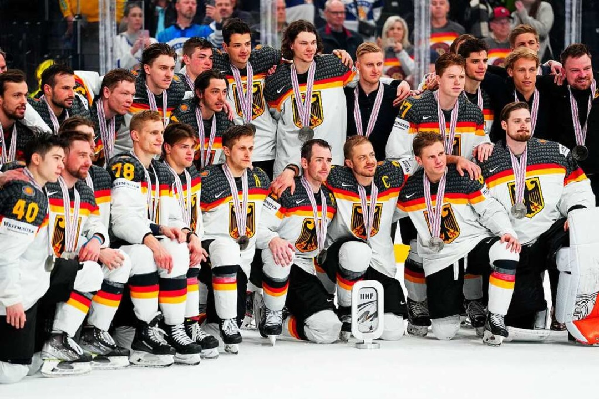

Sports in Germany
Sports play a very important role in German society and culture. From an early age, many people in Germany take part in sports activities, either for fun or in a competitive way. There are thousands of sports clubs across the country, and sport is seen not only as entertainment, but also as a way to promote health, discipline, and teamwork.
Football is by far the most popular sport in Germany. The Bundesliga is one of the most important football leagues in the world, and the national team has achieved great international success. Besides football, other sports such as handball, basketball, athletics, cycling, and winter sports (like skiing and biathlon) are also very popular.
In conclusion, sports in Germany are a key part of national identity and play an important role in education, leisure time, and social life.




Games similar to ice hockey were popular in winter time not only in the Alps but also at lakes and rivers all over Germany for centuries. The traditional food Eisbein is named after a bone which is used for making ice skates. In 1864 the first skating club was found in Frankfurt, in the same city opened in 1881 the third artificial ice skating rink in the world (after London and Baltimore), but it was the first with a cooling system with ammonia. Even if it covered only 520 m2 and was operating only for advertising reasons, it was replaced 10 years later by a permanent one.
The beginning of ice hockey in Germany brought a rapid decline of the traditional German games played with a stick on ice. The first registered ice hockey game in Germany was played on February 4, 1897 on the Halensee Lake in Berlin. The participants were Akademischer SC 1893 Berlin and a team of students.
The German national athletics team is the group of athletes (men and women) of German nationality who represent the German Athletics Federation individually and collectively in international competitions organized by the International Athletics Federation (IAAF), the European Athletics Association, the International Olympic Committee (IOC) or other athletic organizations.
Germany is a nation that has made great achievements in this discipline, leading widely in the all-time medal table of the European Athletics Championships and European Athletics Indoor Championships. Now in the World Athletics Championships, Germany is third behind Russia and the United States, the same is true in the World Athletics Indoor Championships, It is also the country that has won the most editions in the World Athletics Team Cup.